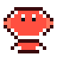
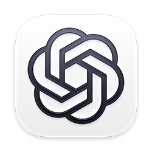
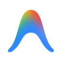

Desktop companion
Run Taskfolk directly in this app, or connect it to an existing Taskfolk server.
Local mode runs a private Taskfolk server inside the desktop app. Agents can come from local or remote OpenClaw, OpenCode, VS Code Copilot, Codex, Claude, and Gemini.

opencode --port 4096

openclaw devices list
openclaw devices approve <requestId>

